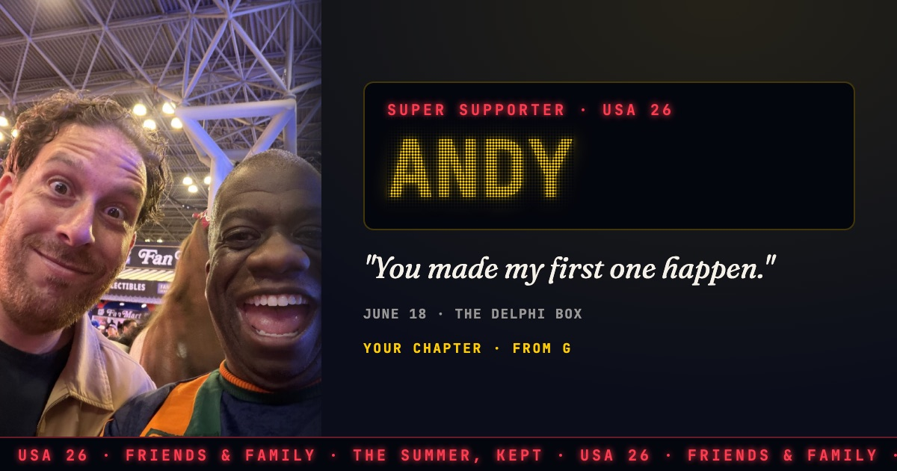

Andy: "You made my first one happen."
June 18 · the Delphi box. This is one line from your chapter on The Friends, the page I wrote about the people who made my World Cup summer.
Read your chapterUSA 26 with Gordon · The Friends

June 18 · the Delphi box. This is one line from your chapter on The Friends, the page I wrote about the people who made my World Cup summer.
Read your chapterUSA 26 with Gordon · The Friends